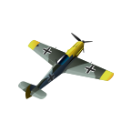
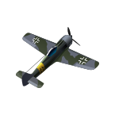
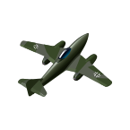
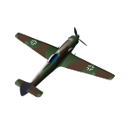
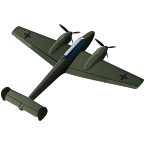
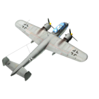

|  | Bf.109 Messershmitt Bf.109 был самым распространенным истребителем, стоявшим на вооружении Люфтваффе с самого начала Второй мировой войны. Модификация Bf.109E "Эмиль" являлась пиком развития серии и по некоторым параметрам превосходила лучшие самолеты Союзников того периода. Основным отличием этой модификации от модели Bf.109D был более мощный двигатель DB601A мощностью 1085 л.с. |
Страна :Германия Тип:Бомбардировщик Год : 1944 |
|  | Fw.190 Самолеты модельного ряда Fw.190 применялись не только в качестве истребителей, но и для атаки наземных целей. Осенью 1942 года, в связи с ростом роли штурмовой авиации, а также быстрым устареванием Ju.87, в производство запустили модификацию Fw.190F - самолет для поддержки сухопутных войск. Чтобы самолет мог выполнять задачи штурмовика, его двигатель был оснащен новым инжектором, позволяющим увеличить скорость на низких высотах. Также была установлена более мощная радиостанция для координации действий с наземными войсками. |
Страна :Германия Тип:Истребитель, Штурмовик Год : 1944 |
|  | Me.262 Истребитель Messerschmitt Me.262 был первым серийным реактивным истребителем в мире. Несмотря на то, что разработка самолета началась еще до начала Второй мировой войны, в серию он попал лишь в 1944. Стоит отметить, что в столь долгом цикле разработки виноваты не инженеры Мессершмитта, а разработчики двигателей из BMW. |
Страна :Германия Тип :Истребитель Год : 1944 |
|  | Ta.152
С появлением у Союзных войск высотных бомбардировщиков B-17, способных доставлять смертоносный груз на высотах, недосягаемых для атаки обычными истребителями, у Люфтваффе появилась необходимость в скоростном высотном истребителе. Так появился самолет Ta.152, разработанный компанией "Fokke-Wulf" на базе Fw.190D |
Страна :Германия Тип :Истребитель Год : 1944 |
|  | Bf.110 Messerschmitt Bf.110 представлял собой двухдвигательный тяжелый истребитель, разработанный в 1936 году. Его конструкция строилась на той же основе, что и Bf.109. Крылья состояли из двух секций каждое, они крепились к фюзеляжу в трех точках - одна на передней кромке, две на лонжероне. Кабина была закрыта длинным остекленным фонарем. С помощью гидравлики убирались все три стойки шасси. Экипаж самолета состоял из трех человек - перед крылом сидел пилот, за ним - штурман-радист. Третий член экипажа, стрелок, располагался за крылом. |
Страна :Германия Тип : Тяжелый истребитель Год : 1937 |
|  | Do.217 Сначала самолёт разрабатывался как развитие конструкции Do.17Z, но впоследствии концепция претерпела введение настолько существенных новшеств, что по сути явилась принципиально новой конструкцией, которую практически ничего не связывало с предшественником. Прототип Do.217V1 был облётан в августе 1938 г. Серийное производство первой серийной модификации Do.217E-1 началось в конце 1940 г. |
Страна :Германия Тип :Бомбардировщик, Пикирующий бомбардировщик, Тяжелый бомбардировщик Год : 1940 |